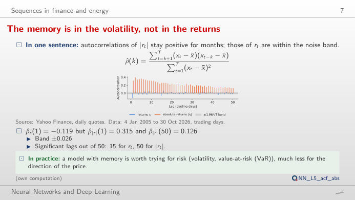
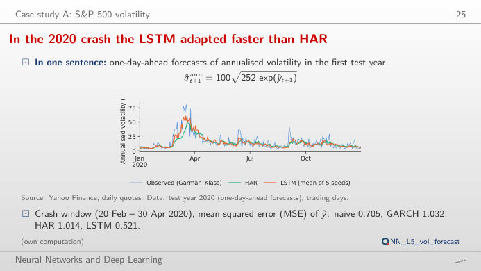
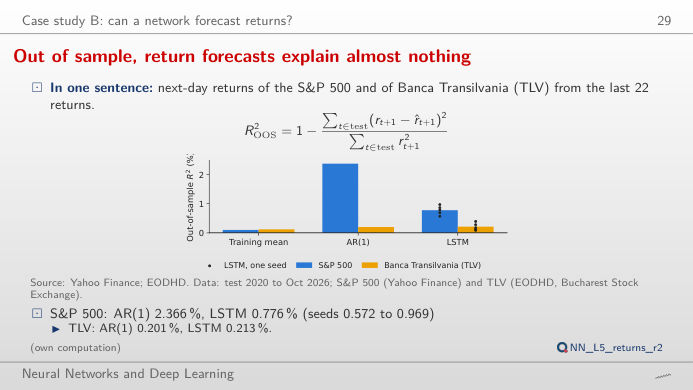
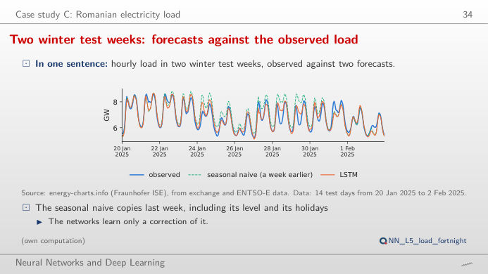
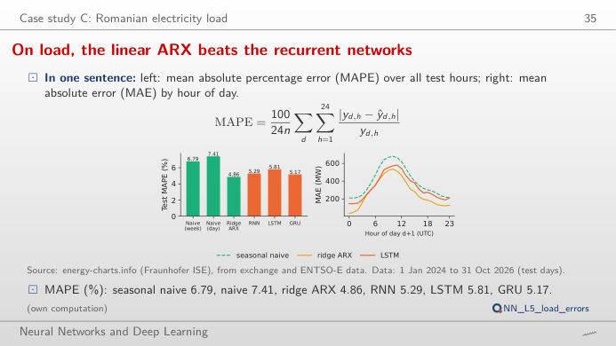

The slide of the lecture is on the left, the same figure on the right, recomputed in your browser from the course data and the saved forecasts of the lecture when you move a control. The ▶ button moves the main parameter step by step. Under each figure: a readout, a question for the room and the Quantlet with the code of the chart. Choose a period, a market or a day and compare the recurrent networks with their benchmarks on the same days.
Financial time series: what is predictable · Day-ahead electricity load in Romania
Financial time series: what is predictable
The memory is in the volatility, not in the returns

Answer
Returns themselves have a first-order autocorrelation of −0.119 and only 15 of the first 50 lags outside the ±0.026 band (1.96/√T for white noise). Absolute returns have ρ(1) = 0.315 and all 50 lags are significant, still 0.126 at lag 50: calm and turbulent periods cluster (volatility clustering). The size of tomorrow's move is predictable even if its sign is not, which is why task A of the lecture forecasts volatility. For Banca Transilvania the pattern is the same but weaker (|r|: ρ(1) = 0.227).
In the 2020 crash the LSTM adapted faster than HAR

Answer
Over the whole test the MSE is 0.966 for the naive forecast, 0.786 for GARCH, 0.706 for HAR and 0.625 for the LSTM (mean of 5 seeds; GRU 0.624, RNN 0.643). The gain is largest in the 2020 crash (20 February to 30 April: LSTM 0.521, HAR 1.014, GARCH 1.032): the network reacts faster to the jump in range volatility. In 2022 the ranking is the same but the gaps are smaller (0.585 against 0.623). Move the window: short windows give noisy rankings, which is why the lecture uses the Diebold–Mariano test on the whole test period (LSTM vs HAR: statistic −5.52).
Out of sample, return forecasts explain almost nothing

Answer
Almost entirely from the crash of February–April 2020: the AR(1) slope is −0.10 (reversals), and on those violent days it pays off. The cumulative curve jumps in March 2020 and then drifts sideways or down; outside 20 February – 30 April 2020 the AR(1) R² is −0.2%. The LSTM ensemble earns about two thirds of its gain in the same weeks. Its sign is right on 52.1% of the days (mean of the 5 seeds; 53.1% for their average forecast), below the share of up days (54.0%). On TLV the R² of all models is between 0.1% and 0.4%. Daily returns are close to unpredictable; a small positive R² is not a trading strategy.
Day-ahead electricity load in Romania
Two winter test weeks: forecasts against the observed load

Answer
Over these 14 days the MAPE is 6.0% for the seasonal naive forecast (same day of the previous week), 3.2% for the LSTM, 2.9% for the GRU and 2.6% for the ridge ARX. The naive forecast fails when the level changes from one week to the next (cold spells, holidays): it repeats last week's level. Over the whole test period (1,035 days) the MAPE is 6.79% (naive), 4.86% (ridge ARX), 5.81% (LSTM) and 5.17% (GRU). Scroll through the days around Christmas or Easter: every model misses holidays it has no input for.
On load, the linear ARX beats the recurrent networks

Answer
The errors peak in the late morning (around 10:00–11:00 UTC), when the ramp-up of demand and the output of rooftop solar make the net load hardest to predict: 681 MW for the naive forecast, 537 MW for the ridge ARX, 581 MW for the LSTM. Weekends are not harder: the MAE of the LSTM is 342 MW on weekdays and 303 MW on weekends. Over all test days the ridge ARX has the lowest MAE (269 MW, against 293 MW for the GRU, 331 MW for the LSTM and 396 MW for the naive forecast): a linear model with the right lags is a hard benchmark for a recurrent network.
Data: S&P 500 daily open, high, low and close (Yahoo Finance, January 2005 to October 2026), Banca Transilvania (TLV) adjusted closes (EODHD, Bucharest Stock Exchange, from 2008), Romanian hourly electricity load (energy-charts.info, from ENTSO-E data, 2016 to October 2026, hours in UTC = coordinated universal time). Test periods: 2020 to October 2026 (markets), 2024 to October 2026 (load). Forecasts of the recurrent neural networks (RNN), long short-term memory (LSTM) and gated recurrent unit (GRU) networks are the saved runs of the lecture (analysis_L5.py, seeds 20261108 + s); HAR = heterogeneous autoregressive model, GARCH = generalised autoregressive conditional heteroskedasticity, ARX = autoregressive model with exogenous inputs, MSE = mean squared error, MAE = mean absolute error, MAPE = mean absolute percentage error.